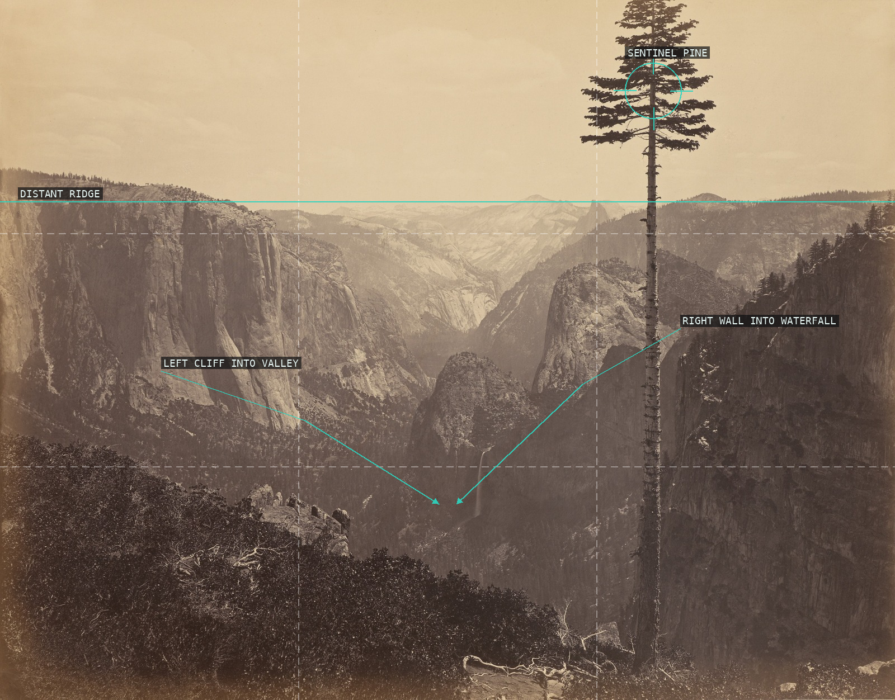
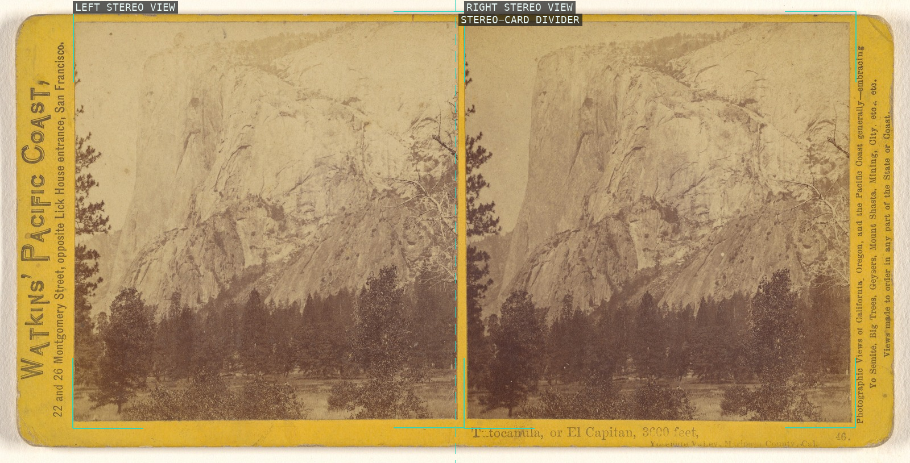
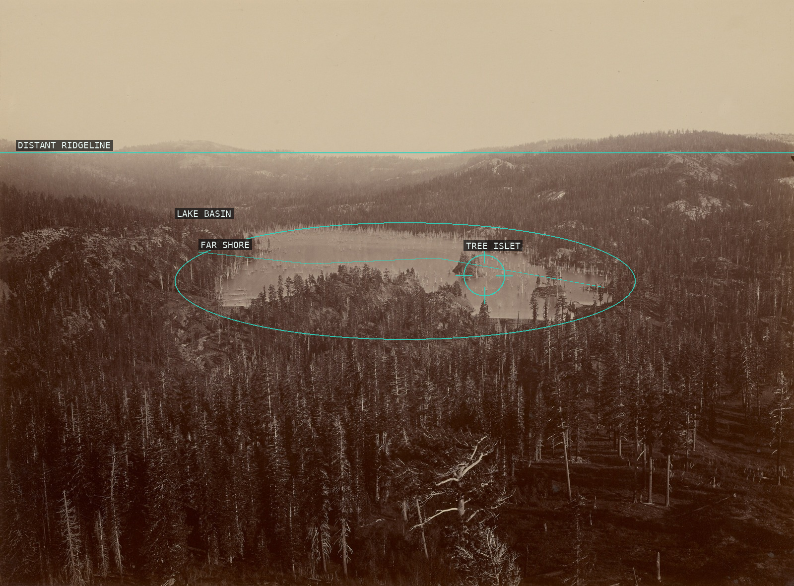
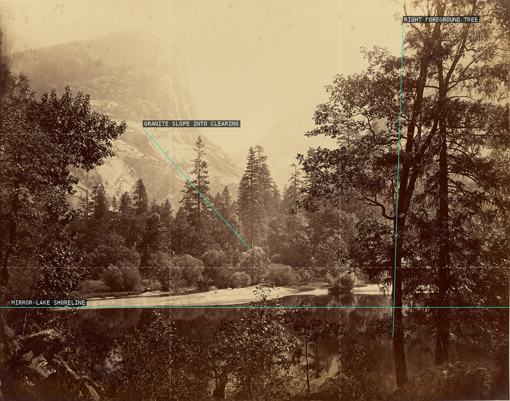
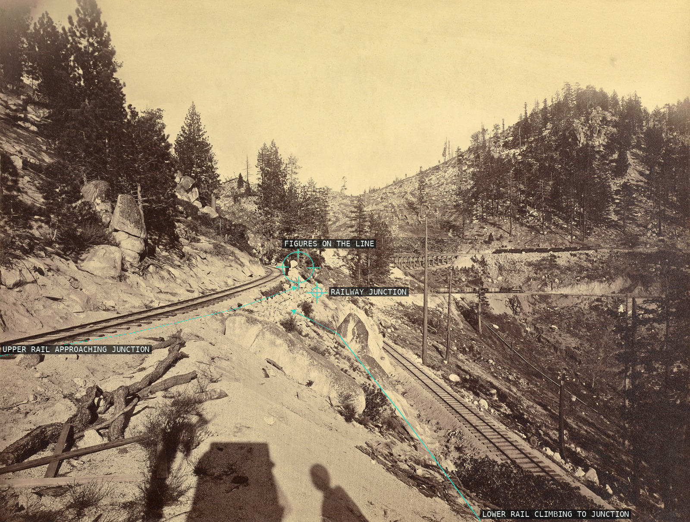
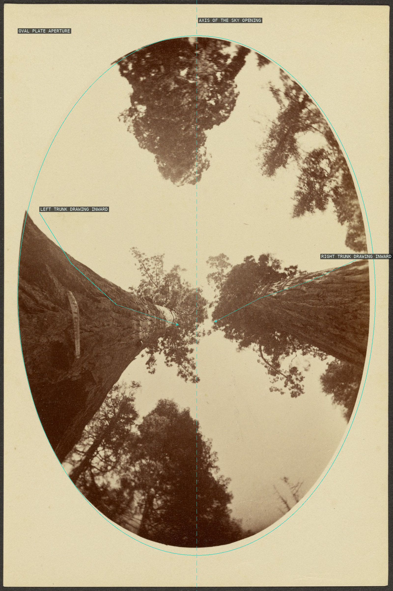
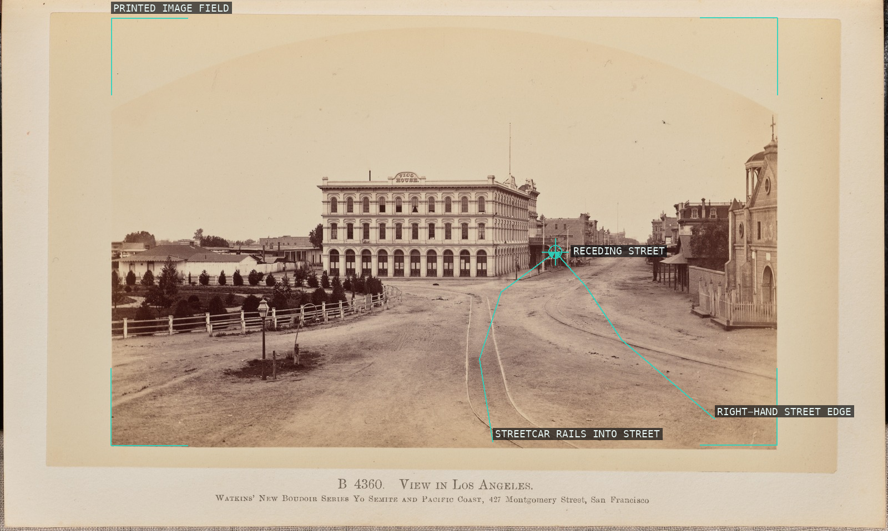
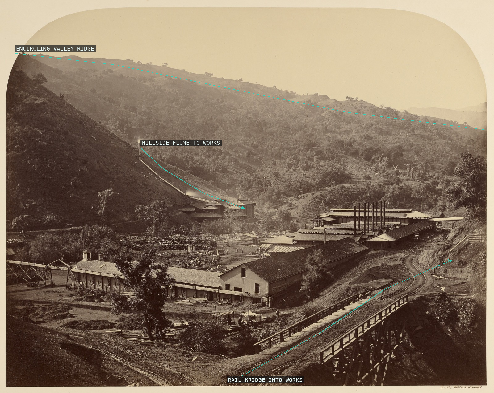

Carleton Watkins — overlay proofs

01 — Yosemite Valley from the Best General View

02 — Tutocanula, or El Capitan

03 — Dams and Lake, Nevada County

04 — Mirror Lake and Mt. Watkins
 05 — Multnomah Falls, Side
05 — Multnomah Falls, Side

06 — View on Lake Tahoe

07 — Among the Treetops, Calaveras Grove

09 — Views in Los Angeles

10 — Smelting Works, New Almaden